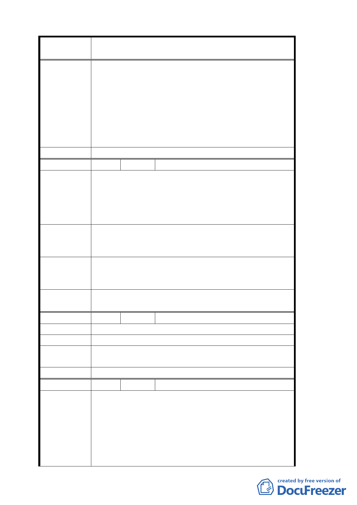

案 名 變更臺北市文山區指南里、老泉里部分保護區為休閒
產業特定專用區都市計畫案
1. 有關稅率適用問題，移請建設局及稅務機關酌處。
2. 建蔽率 15％，其中主建物建蔽率不得超過 10％，涼
亭部分不得超過 5％，其中涼亭部分之興建應符合
專 案小組 審 「臺北市山坡地開發建築要點」及水土保持相關規
查 結 論 定辦理。
3.有關原有不符本計畫土地使用分區管制之建築，修
正為三年內完成申請建築核准，核准二年內建築完
成。
委 員會決 議 同專案小組審查結論。
編 號 ９ 陳情人 張舒程
木柵觀光茶園之休閒餐飲機能是源自於輔導茶農產消
費及維持生計所衍生。
陳 情 理 由 貴局所擬休閒產業特定專用區之政策，其中申請基地
面積及緩衝期等限制不符民情，多數民眾確實難以配
合轉型。
建請取消申請基地面積之限制。基於輔導美意允以就
建 議 辦 法 地申請營業維持生計，以促進休閒產業多元化，俾利
市民消費之選擇。
專案小組審
查結論
休閒產業特定專用區內既有合法建築之申請基地面積
修正為 1000 平方公尺。
委員會決議
專案小組審查結論中「休閒產業特定專用區」乙詞修
正為「本計畫範圍」，其餘同專案小組審查結論。
編 號 １０ 陳情人 張振理
陳情理由
建 議 辦 法 離馬路 150 公尺內希望能納入。
專案小組審
查結論
未鄰接產業道，考量救災避難需要，歉難採納。
委 員會決 議 同專案小組審查結論。
編 號 １１ 陳情人 張慕道
請問此一變更方案的目的何在？
（一）幾次市府辦的公聽會聽說是要促進地方繁榮、
改善休閒品質、美化環境，要幫助舊有商家合法
陳情理由
經營，可是目前所公告的一切規定，我們沒有感
覺是要解決我們現有住民的問題，反而是要逼這
些農民賣地，因為農民沒有那麼多的錢去蓋一間
符合市府規定的休閒商店又要每年繳稅（稅率未
八